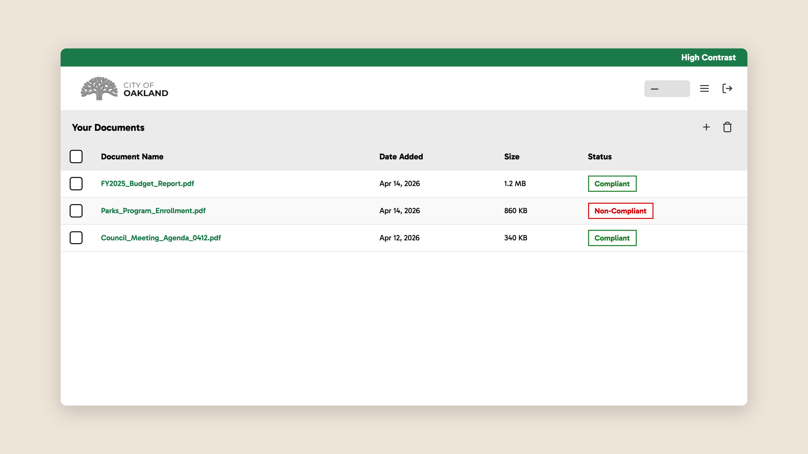
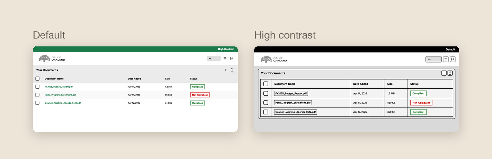

City of Oakland: AI Document Accessibility Converter
A website where City of Oakland staff can upload a PDF and get back an accessible version, along with a report of every fix and flagged issue.

The Problem
Under the Americans with Disabilities Act (ADA), the City of Oakland is required to make the documents it produces follow the Web Content Accessibility Guidelines (WCAG). Up until now, they had been doing this manually, which takes a lot of time and energy and leaves room for human error, especially with a backlog of over 40,000 documents.
While looking into this, we found that the existing accessibility tools were all commercial products, and none of them followed WCAG to the government’s standards. Without a better option, a large group of people with disabilities can’t access documents they need in their daily lives.
Our goal was to create a free, easy-to-use website where staff can upload a document and have AI fix what it can, while flagging anything it can’t fix on its own, so that they can make sure the final document is accessible.
Context & Constraints
This was a course project for CS 2535 at Northeastern, with the City of Oakland as our client. Anh Nguyen was our principal investigator, and Professor Miguel Fuentes-Cabrera was our mentor. I worked alongside Anthony Bazhenov, Sun Choi, Audrey Tung, and Dani Luo, where I created the website’s design system, designed most of its screens, and helped with minor pieces of the backend logic.
- We aimed for WCAG level AA, as the stricter AAA guidelines mostly don’t apply to the text documents we were working with.
- The city couldn’t provide pairs of inaccessible and fixed documents for us to train on, and none existed publicly, so the team turned to AI to generate synthetic training data.
- With only one semester, we narrowed our focus to PDFs and the most common accessibility issues.
- The website itself also needed to be accessible and usable from any device.
Process
The team split the work between the AI pipeline and the website, with my focus being the website’s interface.
1. Designing the interface
I built the website’s design system and used it to design every screen except the document viewer, including sign-in and registration, the dashboard where staff upload, list, and delete documents, settings, and password reset. The document viewer, which shows the converted document next to a sidebar report of what changed and what still needs a person’s review, was designed by a teammate.
We wanted the website to feel familiar to the City of Oakland’s employees, which is why the design system closely follows the city’s main website, keeping the same colors and a similar style of clean, readable sans-serif fonts. We also wanted it to be as simple as possible to see which documents you have and whether they’ve been fully converted or still need manual fixes, so each document’s name and compliance status are the first things you see on the dashboard. Since accessibility was such an important part of this project, our website had to be accessible too, which is why the high contrast toggle sits in the top bar of every page instead of being buried in a settings menu. Given more time, this would have grown into a full accessibility menu so that anyone could use the website, regardless of the accommodations they need.

2. How the conversion works
Behind the interface, the team fine-tuned two OpenAI models. The first model reads an inaccessible document and creates a remediation plan, listing each issue, how severe it is, which guideline it breaks, and how to fix it. The second model then takes in both the document and the plan to produce the accessible version. Some common fixes include adding alt text to images (WCAG 1.1.1), making sure information isn’t conveyed by color alone (1.4.1), increasing text contrast (1.4.3), and turning list-like content into properly tagged lists for screen readers (1.3.1).
Outcome
We delivered a first iteration of the website. The frontend is functional, allowing staff to upload a PDF and review the automated fixes and flagged issues in a report. However, the tool isn’t live yet, as the AI’s document formatting wasn’t finalized and still needs more iteration.
We found that splitting the AI’s job into two steps, first creating a remediation plan and then the corrected document, led to more precise, guideline-aware results than fixing the documents directly.
Our biggest lesson was the importance of scoping realistically from the start. Narrowing our focus to PDFs mid-semester allowed us to produce something stable rather than something broad but unfinished. Personally, I enjoyed this project enough that it’s the reason I want to keep working on accessibility in tech.